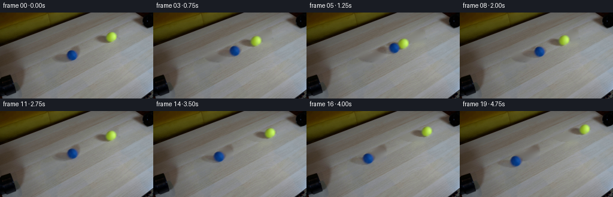
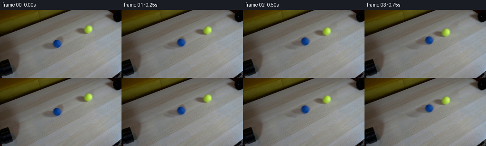

CODING AGENTS AS PIXEL WORLD MODELS
traex/GPT-6.1-Sol · 0031
点击播放 · 原生 RGB 像素
逐轮保存的候选
回放视频、检查图与代码变化。
每份候选均可单独播放。实际图片检查记录在下方工具轨迹中。
候选 01播放与检查图
点击播放 · 原生 RGB 像素


展开代码变化
--- 上一保存版本
+++ 本次保存版本
@@ -0,0 +1,197 @@
+from pathlib import Path
+
+import cv2
+import numpy as np
+from PIL import Image
+from scipy.ndimage import gaussian_filter, distance_transform_edt
+
+import artifact_io
+
+
+ROOT = Path(__file__).resolve().parent
+H, W = 144, 256
+YY, XX = np.mgrid[:H, :W].astype(np.float32)
+
+
+def ellipse(cx, cy, rx, ry, slope=0):
+ return ((XX-cx)/rx)**2 + ((YY-cy-slope*(XX-cx))/ry)**2
+
+
+def repair(image, mask):
+ """Directional harmonic continuation of the table's diagonal wood grain."""
+ mask = mask.astype(bool)
+ result = cv2.inpaint(image.astype(np.uint8), mask.astype(np.uint8)*255,
+ 4, cv2.INPAINT_TELEA).astype(np.float32)
+ # The broad grain runs up and right. An anisotropic discrete Laplacian
+ # continues those bands across the two small missing portions of the table.
+ offsets = [(1, 0, .45), (0, 1, .65), (2, -1, 1.7),
+ (3, -1, .9), (1, -1, .45)]
+ sy, sx = np.where(mask)
+ total = 2*sum(o[2] for o in offsets)
+ for _ in range(320):
+ value = np.zeros((len(sy), 3), np.float32)
+ for dx, dy, weight in offsets:
+ value += weight*(result[sy+dy, sx+dx] + result[sy-dy, sx-dx])
+ result[sy, sx] = .35*result[sy, sx] + .65*value/total
+ return result
+
+
+def sample(image, x, y):
+ return cv2.remap(image.astype(np.float32), x.astype(np.float32),
+ y.astype(np.float32), cv2.INTER_LINEAR,
+ borderMode=cv2.BORDER_CONSTANT)
+
+
+def layers(image):
+ # Dimensions include the optical edge softness, not a hard cartoon outline.
+ objects = [(120.15, 71.35, 8.75, 8.55),
+ (185.95, 40.75, 8.30, 8.30)]
+ masks = []
+ for index, (cx, cy, rx, ry) in enumerate(objects):
+ ball = ellipse(cx, cy, rx+3.6, ry+3.6) < 1
+ shadow = ellipse(cx-13.0, cy+3.0, 23.0 if index == 0 else 20.0,
+ 7.4 if index == 0 else 6.7, .15) < 1
+ masks.append(ball | shadow)
+ allmask = masks[0] | masks[1]
+ background = repair(image, allmask)
+
+ # Continue only the shadow under each opaque sphere, separately from the
+ # clean tabletop. That gives a multiplicative shadow and a premultiplied
+ # foreground instead of moving a rectangular crop of the wood along with it.
+ ballmask = np.zeros((H, W), bool)
+ for cx, cy, rx, ry in objects:
+ ballmask |= ellipse(cx, cy, rx+2.6, ry+2.6) < 1
+ beneath = repair(image, ballmask)
+ answer = []
+ for index, (cx, cy, rx, ry) in enumerate(objects):
+ S = 4
+ sy, sx = np.mgrid[:H*S, :W*S].astype(np.float32)
+ hard = (((sx/S-cx)/rx)**2 + ((sy/S-cy)/ry)**2 < 1).astype(np.float32)
+ soft = cv2.GaussianBlur(hard, (0, 0), 1.0*S)
+ alpha = cv2.resize(soft, (W, H), interpolation=cv2.INTER_AREA)
+ support = ellipse(cx, cy, rx+4, ry+4) < 1
+ # A physical lower bound on alpha makes the inverse compositing stable
+ # even at the soft, strongly colored silhouettes in the source photo.
+ low = np.maximum(1-image/np.maximum(beneath, 1),
+ (image-beneath)/np.maximum(255-beneath, 1)).max(axis=2)
+ alpha = np.maximum(alpha, np.clip(low, 0, 1)*support)
+ alpha *= support
+ premult = image - beneath*(1-alpha[..., None])
+ premult *= support[..., None]
+ foreground = np.clip(premult/np.maximum(alpha[..., None], .035), 0, 255)
+ # Extrapolate the surface color at the edge before interpolation.
+ core = alpha > .45
+ nearest = distance_transform_edt(~core, return_distances=False, return_indices=True)
+ filled = foreground[nearest[0], nearest[1]]
+ foreground = np.where(core[..., None], foreground, filled)
+ smooth = gaussian_filter(foreground, (.65, .65, 0))
+ texture = (foreground-smooth)*np.minimum(alpha[..., None]*1.4, 1)
+ # Keep the source's exact optical shading; only the small felt texture
+ # rolls. Broad lighting is fixed to the camera and room.
+ premult = np.clip(image-beneath*(1-alpha[..., None]), 0, 255)
+ premult *= support[..., None]
+ shade = np.clip(beneath/np.maximum(background, 1), .40, 1.04)
+ # The fit is held to 1 at the edge of the small repaired area.
+ edge = np.minimum(distance_transform_edt(masks[index])/2.0, 1)
+ shade = 1+(shade-1)*edge[..., None]
+ shade[~masks[index]] = 1
+ answer.append(dict(cx=cx, cy=cy, rx=rx, ry=ry, alpha=alpha,
+ premult=premult, texture=texture,
+ shadow=1-shade))
+ return background, answer
+
+
+def trajectories(objects):
+ # A one-dimensional rolling collision of equal masses, projected into the
+ # fixed camera. Slight perspective explains the smaller far tennis ball.
+ a = np.array([objects[0]['cx'], objects[0]['cy']+objects[0]['ry']], float)
+ b = np.array([objects[1]['cx'], objects[1]['cy']+objects[1]['ry']], float)
+ direction = (b-a)/np.linalg.norm(b-a)
+ midpoint = (a+b)/2
+ distance = np.linalg.norm(b-a)
+ k = .00085
+ left = (-distance/2)/(1+k*distance/2)
+ right = (distance/2)/(1-k*distance/2)
+ radius = 8.5
+ impact = 1.25
+ speed = (right-left-2*radius)/(2*impact)
+ collision = np.array([left+speed*impact, right-speed*impact])
+
+ def state(t):
+ if t <= impact:
+ s = np.array([left+speed*t, right-speed*t])
+ traveled = np.array([speed*t, -speed*t])
+ else:
+ dt = t-impact
+ # Restitution and gentle rolling drag; contact reverses the two
+ # velocities at once and conserves their equal speed magnitudes.
+ rebound = .89*speed
+ drag = 2.35
+ dt = min(dt, rebound/drag)
+ outward = rebound*dt-.5*drag*dt*dt
+ s = collision+np.array([-outward, outward])
+ traveled = np.array([speed*impact-outward, -speed*impact+outward])
+ coords = []
+ for j, u in enumerate(s):
+ original = [left, right][j]
+ scale = (1+k*original)/(1+k*u)
+ foot = midpoint+direction*u/(1+k*u)
+ center = foot-np.array([0, objects[j]['ry']*scale])
+ coords.append((center, scale, traveled[j]/radius))
+ return coords, direction
+ return state
+
+
+def render(background, objects, coords, direction, t):
+ image = background.copy()
+ maps = []
+ for obj, (center, scale, theta) in zip(objects, coords):
+ mx = obj['cx'] + (XX-center[0])/scale
+ my = obj['cy'] + (YY-center[1])/scale
+ maps.append((mx, my))
+ shadow = sample(obj['shadow'], mx, my)
+ image *= 1-shadow
+ # Paint the more distant ball first, with correct contact occlusion.
+ for j in [1, 0]:
+ obj = objects[j]
+ center, scale, theta = coords[j]
+ mx, my = maps[j]
+ alpha = sample(obj['alpha'], mx, my)
+ color = sample(obj['premult'], mx, my)
+ nx = (mx-obj['cx'])/obj['rx']
+ ny = (my-obj['cy'])/obj['ry']
+ nz = np.sqrt(np.maximum(1-nx*nx-ny*ny, 0))
+ # Rodrigues rotation of the sphere's material coordinates; the axis is
+ # perpendicular to travel. Translation and rotation reverse together.
+ axis = np.array([-direction[1], direction[0], 0])
+ c, s = np.cos(theta), np.sin(theta)
+ dot = axis[0]*nx+axis[1]*ny
+ tx = nx*c-axis[1]*nz*s+axis[0]*dot*(1-c)
+ ty = ny*c+axis[0]*nz*s+axis[1]*dot*(1-c)
+ rolled = sample(obj['texture'], obj['cx']+tx*obj['rx'],
+ obj['cy']+ty*obj['ry'])
+ still = sample(obj['texture'], mx, my)
+ color += (rolled-still)*alpha[..., None]*.6
+ image = image*(1-alpha[..., None])+color
+ return np.clip(np.rint(image), 0, 255).astype(np.uint8)
+
+
+def main():
+ first = np.array(Image.open(ROOT/'first_frame.png').convert('RGB'))
+ assert first.shape == (H, W, 3)
+ background, objects = layers(first.astype(np.float32))
+ movement = trajectories(objects)
+ frames = [first.copy()]
+ for i in range(1, 20):
+ t = i/4
+ coords, direction = movement(t)
+ frames.append(render(background, objects, coords, direction, t))
+ frames = np.stack(frames).astype(np.uint8)
+ (ROOT/'.tmp').mkdir(exist_ok=True)
+ Image.fromarray(np.clip(background, 0, 255).astype(np.uint8)).save(ROOT/'.tmp/background.png')
+ np.save(ROOT/'.tmp/candidate.npy', frames)
+ artifact_io.save(frames, ROOT)
+
+
+if __name__ == '__main__':
+ main()
可观测工具轨迹
实际执行的命令与返回图片。
命令 1exit 0
/bin/bash -lc 'ls -la && cat prompt.txt && cat GENERATION_RULES.md'
命令 2exit 0
/bin/bash -lc "cat artifact_io.py; python - <<'PY'
from PIL import Image
import numpy as np
im=np.array(Image.open('first_frame.png'))
print(im.shape)
# ascii hue classes downsample
for y in range(0,144,3):
s=''
for x in range(0,256,3):
r,g,b=im[y:y+3,x:x+3].mean((0,1))
if max(r,g,b)<40:c='@'
elif max(r,g,b)<75:c='#'
elif b>r*1.3 and b>g*1.05:c='B'
elif r>b*1.3 and g>b*1.2 and r>110:c='Y'
elif max(r,g,b)-min(r,g,b)<15:c='.' if r>180 else ':' if r>120 else '+'
else:c='w' if r>180 else 'o' if r>110 else 'x'
s+=c
print(f'{y:3d} {s}')
PY"命令 3exit 0
/bin/bash -lc "python - <<'PY'
from PIL import Image
import numpy as np
im=np.array(Image.open('first_frame.png')).astype(float)
for name,cond in [('blue',(im[:,:,2]>im[:,:,0]*1.25)&(im[:,:,2]>im[:,:,1]*1.05)&(im[:,:,2]>70)),('yellow',(im[:,:,0]>im[:,:,2]*1.45)&(im[:,:,1]>im[:,:,2]*1.35)&(im[:,:,0]>120))]:
ys,xs=np.where(cond);print(name,len(xs), 'bounds',xs.min(),xs.max(),ys.min(),ys.max(),'center',xs.mean(),ys.mean())
for y in range(0,144,8):
print('row',y,[(x,tuple(im[y,x].astype(int))) for x in range(0,256,8)])
PY"命令 4exit 0
/bin/bash -lc "python - <<'PY'
import numpy as np
from PIL import Image
from scipy.ndimage import label
im=np.array(Image.open('first_frame.png')).astype(float)
for name,cond in [('b',(im[:,:,2]>im[:,:,0]*1.25)&(im[:,:,2]>im[:,:,1]*1.05)&(im[:,:,2]>70)),('y',(im[:,:,0]>im[:,:,2]*1.45)&(im[:,:,1]>im[:,:,2]*1.35)&(im[:,:,0]>120))]:
labels,n=label(cond)
for k in range(1,n+1):
yy,xx=np.where(labels==k)
if len(xx)>10: print(name,len(xx),xx.min(),xx.max(),yy.min(),yy.max(),xx.mean(),yy.mean())
for xx,yy,w,h in [(88,53,50,34),(153,27,51,31)]:
print('CROP',xx,yy)
for y in range(yy,yy+h):
s=''
for x in range(xx,xx+w):
r,g,b=im[y,x]
if b>r*1.25 and b>g*1.05 and b>70:c='B'
elif r>b*1.45 and g>b*1.35 and r>120:c='Y'
elif max(r,g,b)<60:c='@'
elif max(r,g,b)<80:c='#'
elif max(r,g,b)<100:c='x'
elif max(r,g,b)<110:c='o'
elif max(r,g,b)<120:c='-'
elif max(r,g,b)<130:c='+'
elif max(r,g,b)<140:c='='
elif max(r,g,b)<150:c='.'
elif max(r,g,b)<170:c=' '
else:c='*'
s+=c
print(f'{y:3d} {s}')
# luminance wide overview
im=im.mean(-1)
chars='@%#*+=-:. '
for y in range(0,144,2):
print(''.join(chars[min(9,int(im[y:y+2,x:x+2].mean()/256*10))] for x in range(0,256,2)))
PY"命令 5exit 0
/bin/bash -lc "python - <<'PY'
from PIL import Image
import numpy as np
im=np.array(Image.open('first_frame.png')).astype(float)
for name,x0,x1,y0,y1 in [('blue',108,134,59,84),('yellow',175,199,29,53)]:
print(name)
for y in range(y0,y1+1):
print(y,' '.join('%3d/%3d/%3d'%tuple(im[y,x]) for x in range(x0,x1+1)))
PY"命令 6exit 0
/bin/bash -lc "python - <<'PY'
import cv2
import numpy as np
from PIL import Image
im=np.array(Image.open('first_frame.png')).astype(np.float32)
Y,X=np.mgrid[:144,:256]
centers=[(120.3,71.5,9.6),(186.4,40.7,8.8)]
mask=np.zeros((144,256),bool)
for cx,cy,r in centers:
mask|=(X-cx)**2+(Y-cy)**2<(r+2)**2
mask|=(((X-(cx-14))/22)**2+((Y-(cy+3)-.16*(X-(cx-14)))/8)**2<1)
for k in np.arange(1.8,3.51,.1):
# donor +30,-30/k
yy=(Y-30/k).astype(np.float32);xx=(X+30).astype(np.float32)
d=cv2.remap(im,xx,yy,cv2.INTER_LINEAR,borderMode=cv2.BORDER_REFLECT)
valid=(X>90)&(X<201)&(Y>25)&(Y<88)&~mask
valid&=cv2.remap(mask.astype('float32'),xx,yy,cv2.INTER_NEAREST)<.1
# differences subtract plane
a=np.stack([np.ones(valid.sum()),X[valid],Y[valid]],axis=1)
diff=(d-im)[valid]; coef=np.linalg.lstsq(a,diff,rcond=None)[0]
rmse=np.sqrt(((diff-a@coef)**2).mean())
print(round(k,2),round(rmse,2))
PY"命令 7exit 0
/bin/bash -lc "python - <<'PY' import importlib.util for a in ['numpy','scipy','cv2','PIL']: print(a,importlib.util.find_spec(a) is not None) PY"
命令 8exit 0
/bin/bash -lc "python generate.py && python - <<'PY'
import generate as g
import numpy as np
from PIL import Image
im=np.array(Image.open('first_frame.png')).astype('float32')
bg,obs=g.layers(im);movement=g.trajectories(obs)
for t in [0,.25,.75,1.25,1.5,2,3,4.75]:
coords,d=movement(t)
print(t,[(np.round(c,2).tolist(),round(s,3),round(th,2)) for c,s,th in coords])
if t==0:
recon=g.render(bg,obs,coords,d,t)
dif=np.abs(recon-im)
print('reconstruction error',dif.mean(),dif.max(),'changed',np.sum(np.max(dif,axis=-1)>10))
Image.fromarray(recon).save('.tmp/reconstruct.png')
for i in [0,1,3,5,6,10,19]:
f=np.array(Image.open(f'frames/{i:02}.png')).astype(float)
bmask=(f[:,:,2]>f[:,:,0]*1.25)&(f[:,:,2]>f[:,:,1]*1.05)&(f[:,:,2]>70)&(g.XX<230)
ymask=(f[:,:,0]>f[:,:,2]*1.45)&(f[:,:,1]>f[:,:,2]*1.35)&(f[:,:,0]>120)
print('frame',i)
for m in [bmask,ymask]:
yy,xx=np.where(m)
print(len(xx),xx.min(),xx.max(),yy.min(),yy.max(),np.round([xx.mean(),yy.mean()],2))
PY"命令 9exit 0
/bin/bash -lc "python - <<'PY'
import numpy as np
from PIL import Image
from scipy.ndimage import label
f=np.load('.tmp/candidate.npy')
a=np.array(Image.open('first_frame.png').convert('RGB'))
print('Shape/dtype:',f.shape,f.dtype,'first exact:',np.array_equal(a,f[0]))
for k in [1,3,5,6,10,19]:
# Watch for remnants left at original positions.
for (x,y) in [(120,71),(186,41)]:
print(k,(x,y),f[k,y,x].tolist(),end='; ')
print()
print('NPZ',np.load('pixels.npz')['pixels'].shape)
PY
ls -lh pixels.npz index.html inspection.png generate.py"保存候选 1 份；完成命令 9 次；可验证图片返回 0 张。原始 API 响应与完整日志保留在本地。